Fun Projects for your LEGO� MINDSTORMS� NXT!
|
|
Fun Projects for your LEGO� MINDSTORMS� NXT! |
| Mini Sumo Bot |
|

1-11
Start by building the Castor Bot. Click the picture for building instructions.

|
|
12
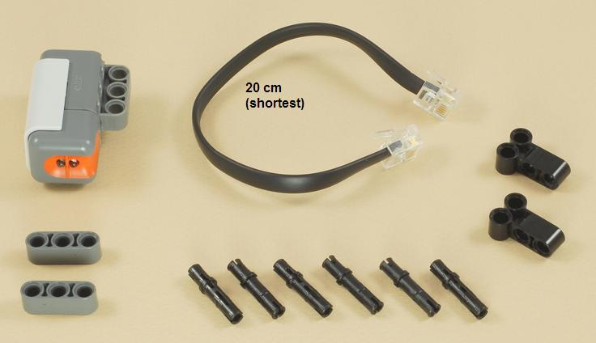
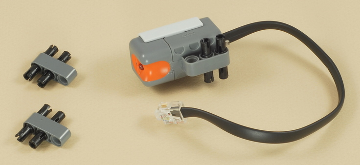
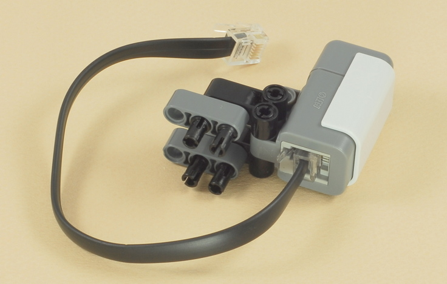
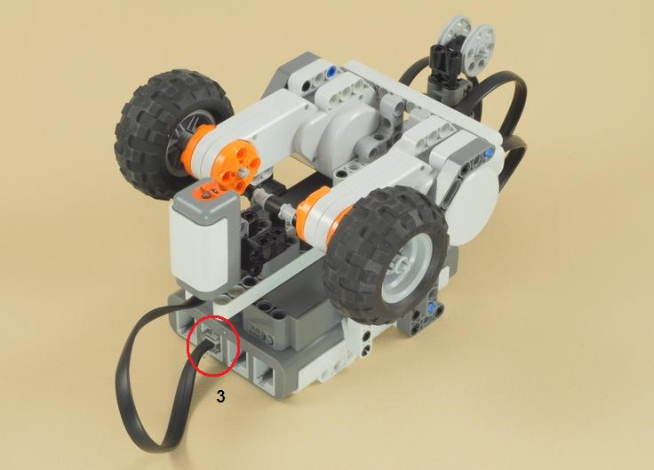
13
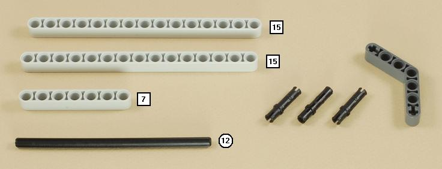
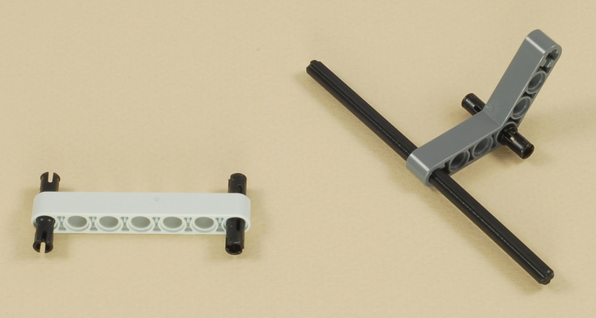
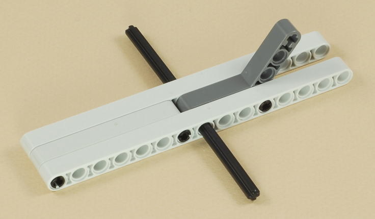
14
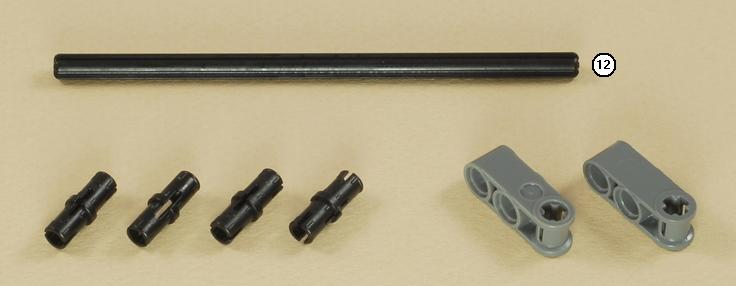
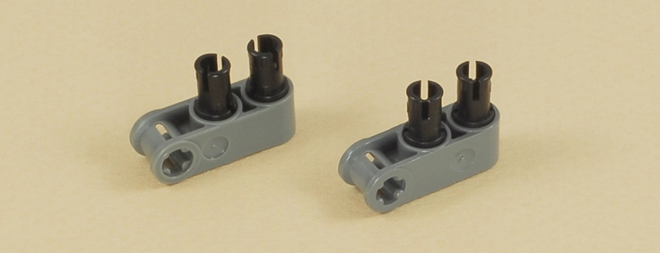
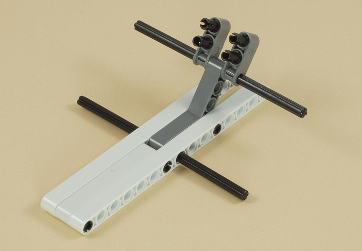
15
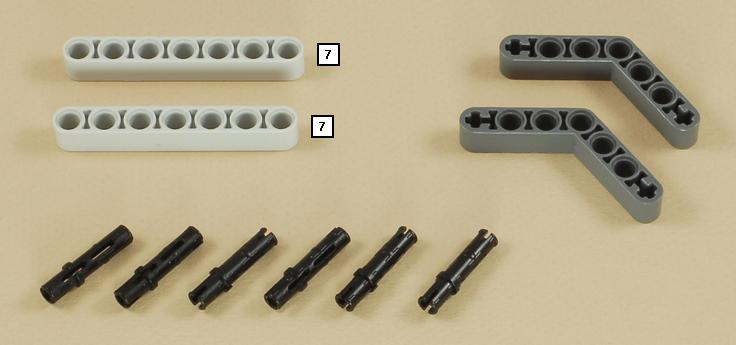
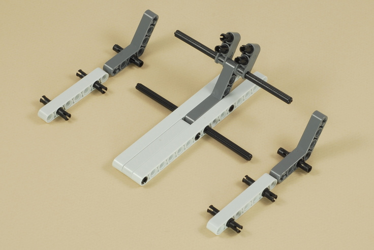
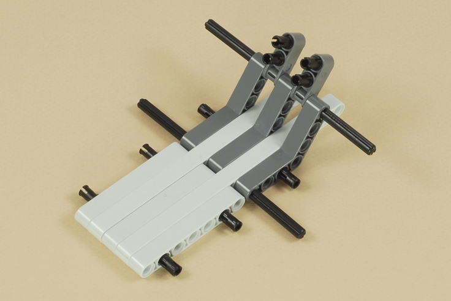
16
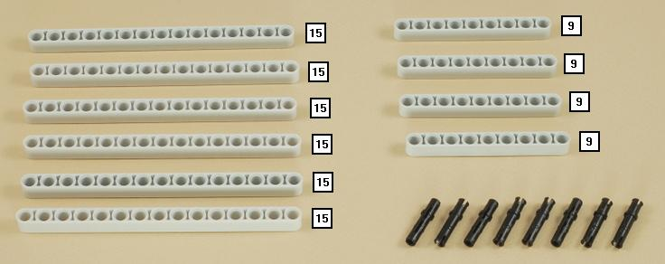
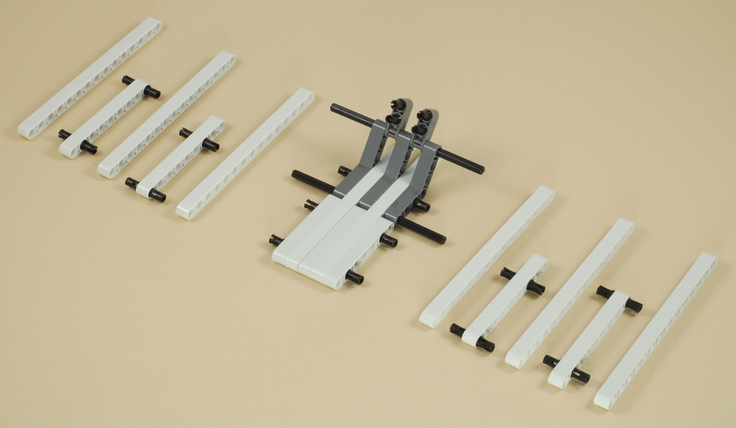
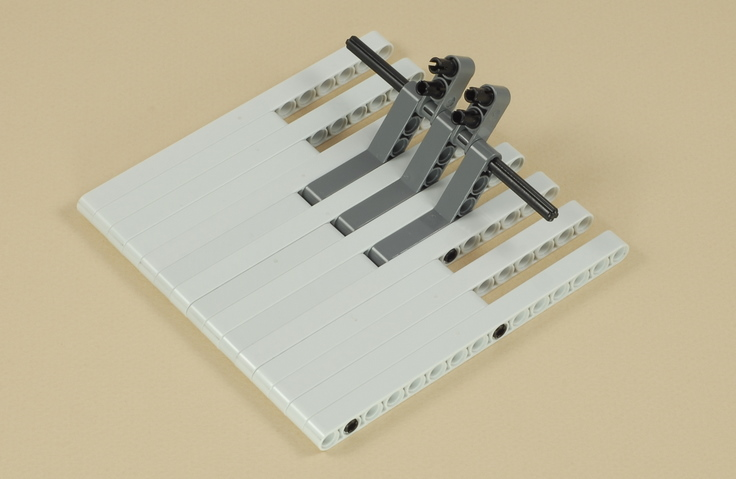
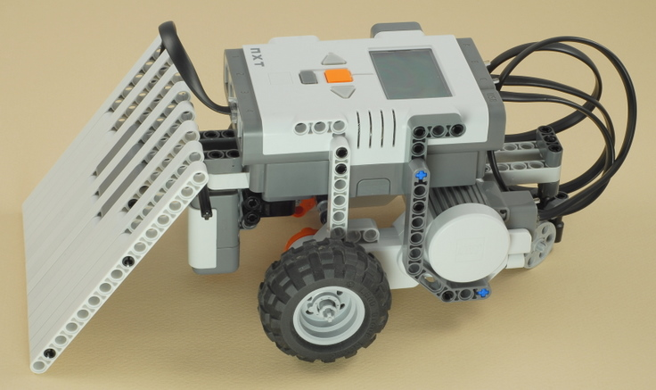
17
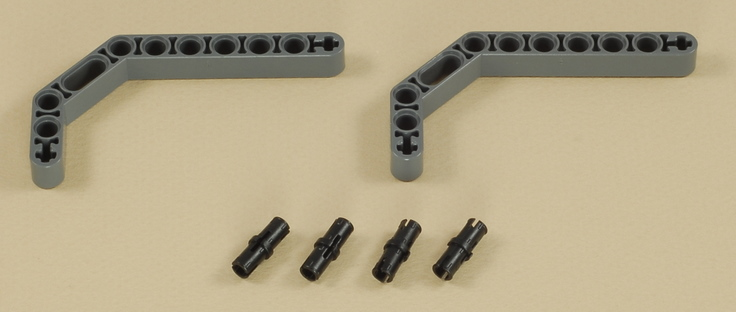
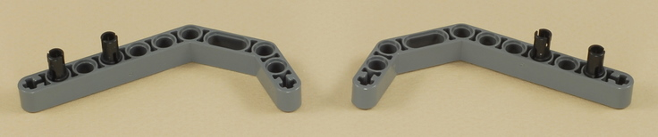
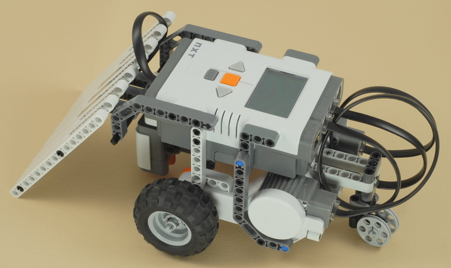
18
| Design your own dummy robots or other objects for your Sumo bot to try to push outside the ring. |
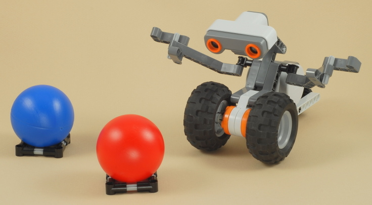
| Mini
Sumo Bot Programming Before using your Sumo bot, you must calibrate the light sensor to the colors on the actual surface that you will be using (with the sensor attached to the robot as it will be used). The program Calibrate_L3 can be used to calibrate a light sensor attached to port 3. The NXT will remember the sensor calibration between program runs, so you can run the Calibrate_L3 program once, then run your Sumo program as many times as you want after that, as long as the lighting conditions don't change. This program can also be used to calibrate a light sensor on port 3 any time you need it for other robots. The Mini_Sumo program is a very simple driving strategy for a Sumo robot. It simply makes the robot go straight forward until the light sensor sees something dark on the surface (might be the ring border), then it backs up a little, turns right to head back into the ring, then repeats (going straight and looking for the ring border again). This will make the robot wander blindly around the ring, pushing whatever is in front of it, and hopefully whatever it finds will get pushed outside before the robot accidentally drives outside the ring on its own. |
Using the Mini Sumo Bot
Making your own Sumo RingThe test pad that comes with the NXT set is not a plain white surface with a simple border. There are other markings inside the ring, and the border is partially interrupted by the "Start" area (What do you think this will do to your robot's strategy?) Making your own ring will produce more consistent results and avoid damaging your test pad. If you want to make your own ring, I suggest:
|
Challenges
Warning:
If both robots are using the ultrasonic sensor, |
|
Copyright
�
2007-2009 by Dave Parker. All rights reserved. |